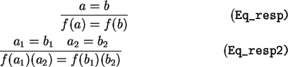

All of the above notions of equality are reflexive and substitutive. We can thus derive symmetry and transitivity. Furthermore, equality respects function applications i.e.,

** Module lib_eq_basics Imports lib_eq
injective = ... : {S|Type}{T|Type}(S->T)->Prop
Eq_sym = ... : {t|Type}sym (Eq|t)
Eq_trans = ... : {t|Type}trans (Eq|t)
Eq_resp = ... : {A|Type}{B|Type}{f:A->B}respect f Eq
** Config Equality Eq Eq_refl Eq_subst
** Config Qrepl Eq Eq_subst Eq_sym
** Config Qrepl Eq Eq_subst Eq_sym
Eq_resp2 = ... : {A|Type}{B|Type}{C|Type}{r:A->B->C}respect2 r Eq